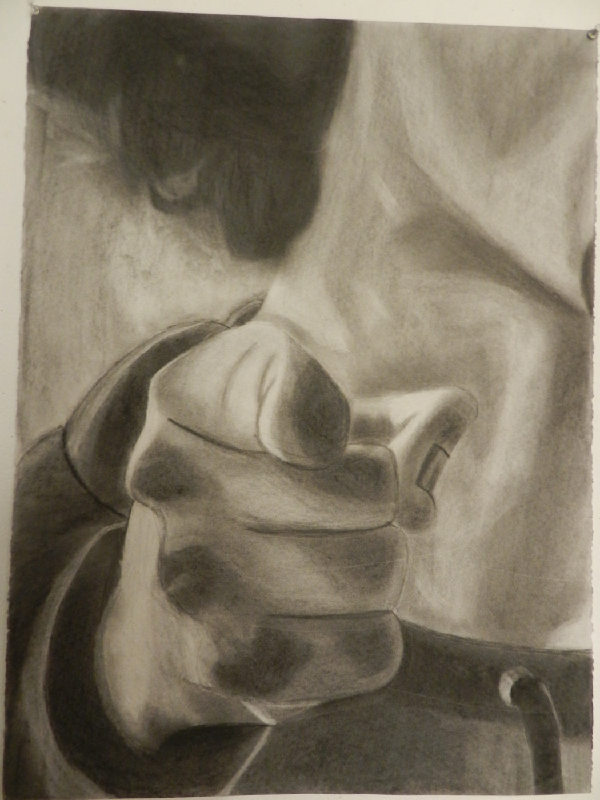
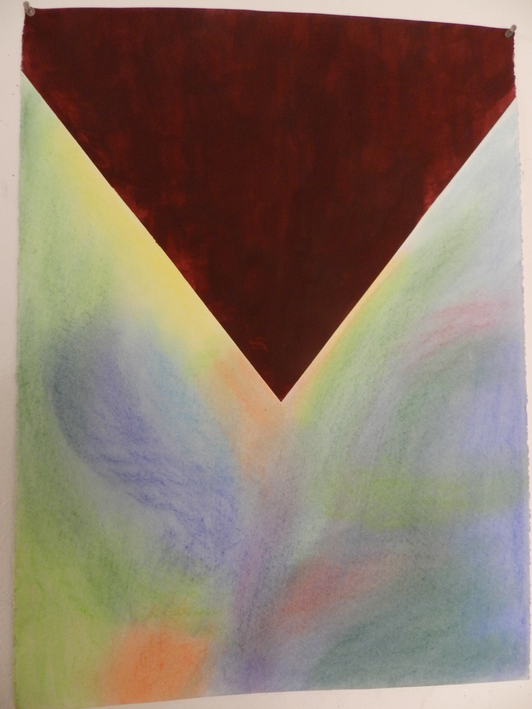

J'accuse
Charcoal, pastel and acrylic on paper
J’accuse was my final project for Drawing 2. The project requirements were to pick an emotion and do two drawings based on the emotion. The first drawing was a black and white drawing of a specific part of the human body meant to represent that emotion. The second drawing was an abstract representation of the emotion in color. We were allowed to use any material we wanted as long as it met the project requirements. I chose charcoal for the black and white image, and color pastels and acrylic paint.
I chose the act of accusation for my emotion. The black and white drawing is an image of a person pointing out at the viewer with his face partially obscured. I settled on this pose as it is very arresting, similar to the Uncle Sam “I want you!” posters from World War I. I then positioned the head, neck and shoulders in the background in a way that prevented the eyes and the mouth from being in the composition; this was to minimize any human connection the viewer had to the subject, and subsequently make the arresting nature of the pointing finger feel inhuman. The abstract was a representation of the emotional state of the accused (the dreamy pastel mix of colors) being pierced by accusation (the giant red triangle). I positioned it from the top to make it feel heavy and oppressive, and chose red because it’s an angry color, especially in relation to the other colors on the page.
2 / 3

Rendered Section
3 / 3

Abstract Section
❮
❯
- Aidan Bauer